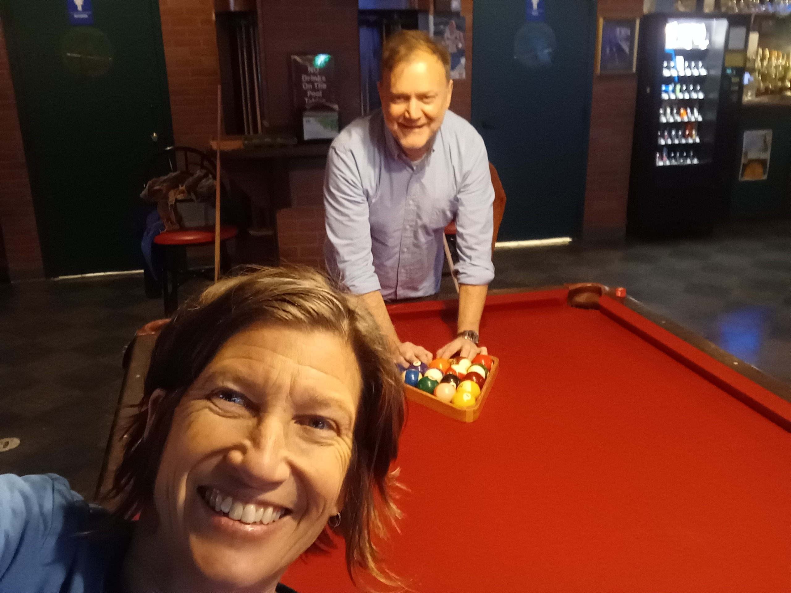

Quick Poll
5 Questions
Red wine or rosé?
Does Kevin have to mow the grass or will you not bring it up?
Church Easter Sunday or start drinking?
Fresh towels or fresh sheets?
What do you take in your coffee?
Itinerary
The Weekend
- Sat PM Arrive — Drinks on the Deck
- Sun AM Mimosas and breakfast on the deck
- Sun Lunch Visit Kevin's Dad
- Sun PM Dinner with Lisa
- Mon AM Coffee at Martin Coffee

Guest of Honor
Wendy